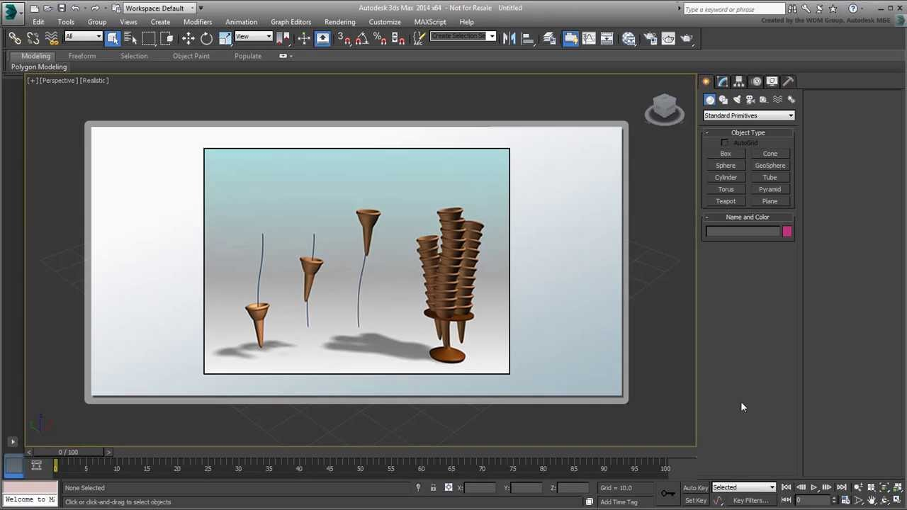

Autodesk 3ds Max: Інструмент Професіоналів
Autodesk 3ds Max — це потужне програмне забезпечення для 3D-моделювання, анімації та візуалізації, яке широко використовується в архітектурі, ігровій індустрії та кінематографі. З його допомогою створюють реалістичні візуалізації, складні анімації та інтерактивні ігрові об'єкти. 3ds Max — це стандарт для багатьох студій по всьому світу.
Ключові можливості 3ds Max
Моделювання
3ds Max пропонує потужні інструменти для полігонального моделювання, роботи з NURBS та параметричними об'єктами. Він ідеально підходить для створення архітектурних візуалізацій та ігрових ассетів.
Анімація та риггінг
З 3ds Max ви можете створювати складні анімації персонажів за допомогою інструментів Character Studio та Biped. Програма також підтримує систему частинок і симуляцію фізики.
Візуалізація
3ds Max інтегрується з Arnold, V-Ray та Corona Renderer для створення фотореалістичних зображень. Він також підтримує реальний час рендерингу з NVIDIA Mental Ray.
Навчання та ресурси
3ds Max має велику кількість навчальних матеріалів. Ось деякі з них:
- Офіційний сайт 3ds Max — завантажте пробну версію та ознайомтесь з офіційними уроками.
- Autodesk 3ds Max YouTube — офіційний канал з навчальними матеріалами.
- CG Architect — ресурс для архітектурної візуалізації з уроками по 3ds Max.
- Pluralsight — курси для різних рівнів підготовки.
- ArtCraft CG School — україномовні курси з 3D-моделювання, включаючи 3ds Max.
Також зазирніть наш розділ із відеоуроками, де є матеріали по 3ds Max!
Дізнайтесь про Cinema 4D